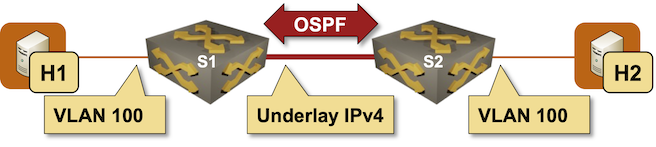

Extend a Single VLAN Segment with VXLAN
VXLAN is a data-plane-only technology that encapsulates Ethernet frames in UDP packets (using the VXLAN header defined in the RFC 7348 as the shim between the two). In this lab exercise, you’ll use VXLAN (overlay network) to extend a single VLAN across an IP-only backbone (underlay network):

Device Requirements
You can use any device supported by the netlab OSPF and VLAN configuration modules. The device should support VXLAN with static ingress replication.
Start the Lab
Assuming you already set up your lab infrastructure:
- Change directory to
vxlan/1-single - Execute netlab up
- Log into lab devices with netlab connect and verify that the IP addresses and the OSPF are properly configured.
Existing Device Configuration
- The switches in your lab (S1 and S2) are preconfigured with a tenant VLAN with VLAN tag 100.
- IPv4 addresses are configured on Linux hosts, switch loopback interfaces, and the interswitch link (details).
- The switches run OSPF in area 0 across the interswitch link (details).
Configuration Tasks
Configuring VXLAN on a switch is usually a multi-step process:
- Configure a VXLAN interface (
Vxlan1on Arista EOS) and assign a local VTEP address (or source interface) to it. You’ll use the loopback IPv4 address as the VTEP address. - Optionally, set the VXLAN destination UDP port (the standard IANA-allocated VXLAN UDP port is 4789)
To extend a VLAN across an underlay network with VXLAN, you have to:
- Map a local VLAN to a VXLAN Virtual Network Identifier (VNI)1. Arista EOS does the mapping within the VXLAN interface configuration.
- Configure a flood list (a list of remote VTEPs) for a VXLAN-enabled VLAN or VNI. The flood list is used to propagate copies of Ethernet BUM (Broadcast, Unknown unicast, Multicast) packets to all other VTEPs participating in the same VXLAN segment. The flood list is also configured within the VXLAN interface configuration on Arista EOS.
The underlay network should be able to transport 1500-byte overlay IP packets. You should therefore increase the IP MTU size on the underlay links to at least 1550 bytes2 due to VXLAN encapsulation overhead:
- 14 bytes for the Ethernet header
- 8 bytes for the VXLAN header
- 8 bytes for the UDP header
- 20 bytes for the outer IPv4 header
Verification
Try to ping h2 from h1:
$ netlab connect h1 ping h2
Connecting to container clab-single-h1, executing ping h2
PING h2 (172.16.0.4): 56 data bytes
64 bytes from 172.16.0.4: seq=0 ttl=64 time=5.273 ms
64 bytes from 172.16.0.4: seq=1 ttl=64 time=2.048 ms
^C
--- h2 ping statistics ---
2 packets transmitted, 2 packets received, 0% packet loss
round-trip min/avg/max = 2.048/3.660/5.273 ms
If that ping succeeds, try pinging with the 1500-byte IPv4 packets. The -s parameter of the Linux ping command specifies the payload size. The maximum payload that can fit into a 1500-byte packet is 1472 bytes due to the ICMP header (8 bytes) and the IP header (20 bytes).
$ netlab connect h1
Connecting to container clab-single-h1, starting bash
h1:/# ping h2 -s 1472
PING h2 (172.16.0.4): 1472 data bytes
1480 bytes from 172.16.0.4: seq=0 ttl=64 time=5.362 ms
1480 bytes from 172.16.0.4: seq=1 ttl=64 time=2.604 ms
1480 bytes from 172.16.0.4: seq=2 ttl=64 time=2.563 ms
^C
--- h2 ping statistics ---
3 packets transmitted, 3 packets received, 0% packet loss
round-trip min/avg/max = 2.563/3.509/5.362 ms
You forgot to change the MTU size on the underlay links if the simple ping succeeds, but the large-packet ping fails.
Done? Continue to More Complex VXLAN Deployment Scenario.
Troubleshooting
Use these troubleshooting steps if the Linux host can’t communicate over the stretched VLAN segment:
Note
The troubleshooting instructions use Arista EOS show commands and corresponding printouts. You’ll have to find matching commands if you use some other platform.
- Verify OSPF connectivity between S1 and S2:
s1#show ip ospf neighbor
Neighbor ID Instance VRF Pri State Dead Time Address Interface
10.0.0.2 1 default 0 FULL 00:00:38 10.1.0.2 Ethernet1
- Verify that S1 and S2 have routes to both loopback interfaces in their routing tables
s1#show ip route
...
Gateway of last resort is not set
C 10.0.0.1/32
directly connected, Loopback0
O 10.0.0.2/32 [110/20]
via 10.1.0.2, Ethernet1
C 10.1.0.0/30
directly connected, Ethernet1
- Verify that S1 and S2 can ping each other’s loopback interfaces from the source IPv4 address of the local loopback interface:
s1#ping 10.0.0.2 source 10.0.0.1
PING 10.0.0.2 (10.0.0.2) from 10.0.0.1 : 72(100) bytes of data.
80 bytes from 10.0.0.2: icmp_seq=1 ttl=64 time=0.096 ms
80 bytes from 10.0.0.2: icmp_seq=2 ttl=64 time=0.007 ms
80 bytes from 10.0.0.2: icmp_seq=3 ttl=64 time=0.004 ms
80 bytes from 10.0.0.2: icmp_seq=4 ttl=64 time=0.005 ms
80 bytes from 10.0.0.2: icmp_seq=5 ttl=64 time=0.009 ms
--- 10.0.0.2 ping statistics ---
5 packets transmitted, 5 received, 0% packet loss, time 0ms
rtt min/avg/max/mdev = 0.004/0.024/0.096/0.035 ms, ipg/ewma 0.038/0.059 ms
If you have gotten this far, your underlay network works correctly. Next, let’s check the VXLAN configuration:
- The show vxlan vni command displays VLAN-to-VXLAN mapping. Check that you correctly mapped VLAN 100 to a VXLAN VNI and used the same VNI on S1 and S2.
s1#show vxlan vni
VNI to VLAN Mapping for Vxlan1
VNI VLAN Source Interface 802.1Q Tag
------------ ---------- ------------ --------------- ----------
100100 100 static Ethernet2 untagged
Vxlan1 100
- The show vxlan vtep command displays remote VTEPs (ingress replication flood list). Check that you configured the remote VTEP loopback IP address in the flood list for your VNI:
s1#show vxlan vtep
Remote VTEPS for Vxlan1:
VTEP Tunnel Type(s)
-------------- --------------
10.0.0.2 unicast, flood
Total number of remote VTEPS: 1
- You can also use the show vxlan flood vtep command to display the same information in a slightly different format.
s1#show vxlan flood vtep
VXLAN Flood VTEP Table
--------------------------------------------------------------------------------
VLANS Ip Address
----------------------------- ------------------------------------------------
100 10.0.0.2
- End-to-end VXLAN should work if all the above printouts seem correct. However, you might also want to check the VLAN ports with the show vlan command and the spanning tree status with the show spanning-tree command.
s1#show vlan
VLAN Name Status Ports
----- -------------------------------- --------- -------------------------------
1 default active
100 tenant active Cpu, Et2, Vx1
s1#show spanning-tree
MST0
Spanning tree enabled protocol mstp
Root ID Priority 32768
Address 001c.73a5.db35
This bridge is the root
Bridge ID Priority 32768 (priority 32768 sys-id-ext 0)
Address 001c.73a5.db35
Hello Time 2.000 sec Max Age 20 sec Forward Delay 15 sec
Interface Role State Cost Prio.Nbr Type
---------------- ---------- ---------- --------- -------- --------------------
Et2 designated forwarding 20000 128.2 P2p Edge
- Finally, the show vxlan address-table command displays MAC addresses learned from the incoming VXLAN packets, while the show mac address-table command displays MAC addresses learned from local interfaces and incoming VXLAN packets:
s1#show vxlan address-table
Vxlan Mac Address Table
----------------------------------------------------------------------
VLAN Mac Address Type Prt VTEP Moves Last Move
---- ----------- ---- --- ---- ----- ---------
100 aac1.ab87.58b8 DYNAMIC Vx1 10.0.0.2 1 0:00:05 ago
Total Remote Mac Addresses for this criterion: 1
s1#show mac address-table
Mac Address Table
------------------------------------------------------------------
Vlan Mac Address Type Ports Moves Last Move
---- ----------- ---- ----- ----- ---------
100 aac1.ab87.58b8 DYNAMIC Vx1 1 0:00:43 ago
100 aac1.abc4.959e DYNAMIC Et2 1 0:00:43 ago
Total Mac Addresses for this criterion: 2
If everything else fails, read the Arista EOS VXLAN Troubleshooting Guidebook or the corresponding documentation for your platform.
Figured out what you did wrong? Continue to More Complex VXLAN Deployment Scenario.
Cheating
- Shut down your lab with the netlab down command
- Start the lab from the
solution.ymltopology with the netlab up solution.yml command - Explore the S1/S2 device configuration
Remembered the commands to configure VXLAN? Practice them in the More Complex VXLAN Deployment Scenario exercise.
Reference Information
Lab Wiring
| Origin Device | Origin Port | Destination Device | Destination Port |
|---|---|---|---|
| s1 | Ethernet1 | s2 | Ethernet1 |
| h1 | eth1 | s1 | Ethernet2 |
| h2 | eth1 | s2 | Ethernet2 |
Lab Addressing
| Node/Interface | IPv4 Address | IPv6 Address | Description |
|---|---|---|---|
| s1 | 10.0.0.1/32 | Loopback | |
| Ethernet1 | 10.1.0.1/30 | s1 -> s2 | |
| Ethernet2 | [Access VLAN tenant] s1 -> h1 | ||
| Vlan100 | VLAN tenant (100) -> [h1,h2,s2] | ||
| s2 | 10.0.0.2/32 | Loopback | |
| Ethernet1 | 10.1.0.2/30 | s2 -> s1 | |
| Ethernet2 | [Access VLAN tenant] s2 -> h2 | ||
| Vlan100 | VLAN tenant (100) -> [h1,s1,h2] | ||
| h1 | |||
| eth1 | 172.16.0.3/24 | h1 -> [s1,h2,s2] | |
| h2 | |||
| eth1 | 172.16.0.4/24 | h2 -> [h1,s1,s2] |
OSPF Routing (Area 0)
| Router | Interface | IPv4 Address | Neighbor(s) |
|---|---|---|---|
| s1 | Loopback | 10.0.0.1/32 | |
| Ethernet1 | 10.1.0.1/30 | s2 | |
| s2 | Loopback | 10.0.0.2/32 | |
| Ethernet1 | 10.1.0.2/30 | s1 |